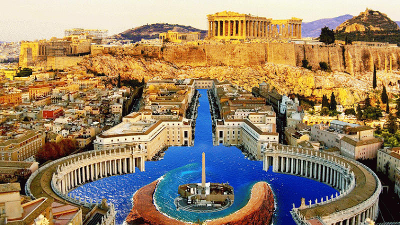
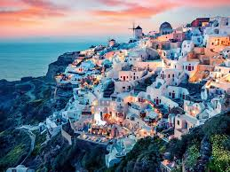
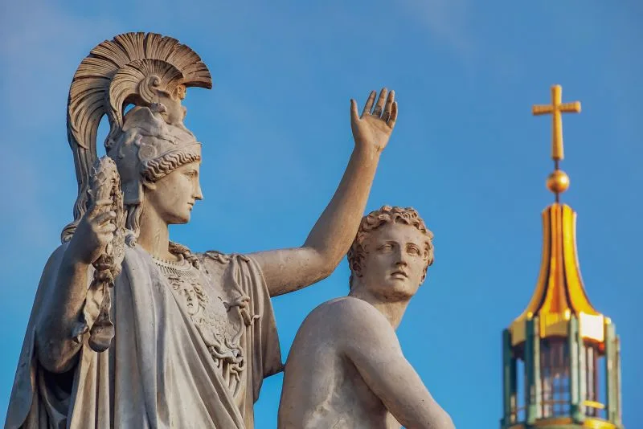
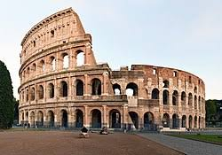
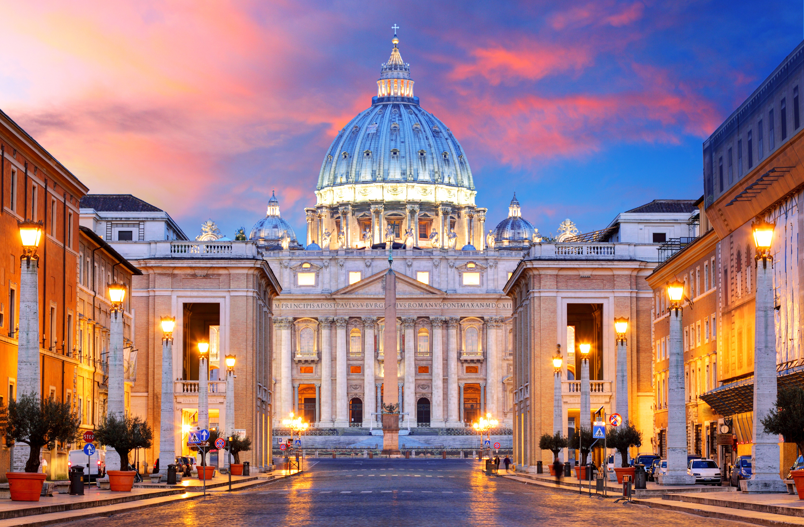
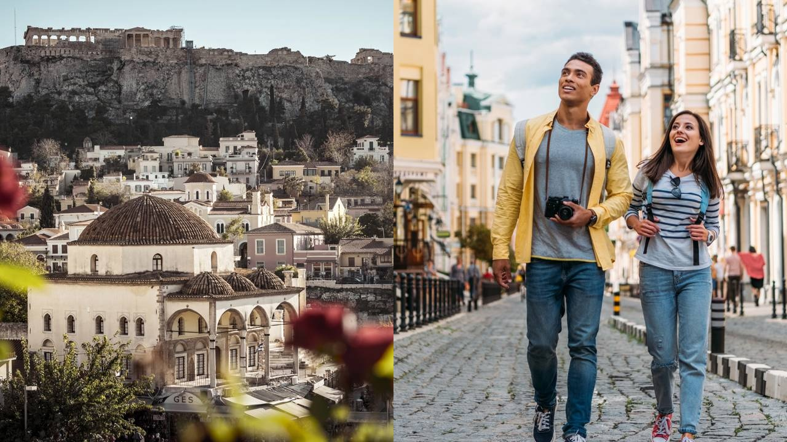

Tradição, cultura e modernidade na Europa
A Grécia hoje é um país moderno localizado no sul da Europa, membro da União Europeia. Sua economia é baseada principalmente no turismo, comércio marítimo e serviços. O país mantém forte influência cultural, sendo conhecido por suas ilhas, história e culinária.

Capital da Grécia, mistura história antiga com vida urbana moderna.

Uma das ilhas mais famosas do mundo, conhecida pelo turismo.

A Grécia preserva tradições antigas na música, dança e gastronomia.
Roma é a capital da Itália e uma das cidades mais importantes do mundo. Atualmente, é um grande centro turístico, cultural e político. A cidade mistura monumentos históricos com uma vida moderna vibrante.

Um dos monumentos mais famosos do mundo, símbolo da Roma Antiga.

Centro da Igreja Católica e um dos menores países do mundo.

Roma combina história com comércio, turismo e gastronomia.
Tanto a Grécia quanto Roma continuam sendo referências culturais e históricas, mostrando como o passado e o presente podem coexistir. Hoje, são destinos turísticos importantes e centros culturais relevantes na Europa.